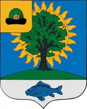

История Новомичуринска
Рязанская ГРЭС и поселок строителей
Официальная датой основания Новомичуринска принято считать 24 мая 1968 г. Город был основан как поселок для строителей и энергетиков Рязанской ГРЭС. В феврале 1968 г. недалеко от Пронска, к юго-востоку от него геодезисты забили первые разметочные колышки, установив табличку, надпись на которой гласила: «Здесь будет Рязанская ГРЭС». Вместе со строительством электростанции началось и строительство поселка Новомичуринска.
Город был назван в честь И. В. Мичурина, знаменитого биолога и селекционера. В 9 км к западу от будущего города находилось бывшее поместье Вершина (сегодня это деревня Мичуровка), в котором родился ученый и начал здесь свои первые работы по растениеводству.
Первоначально это был поселок, состоящий из вагончиков и деревянных сборных домиков, разбитых на улицы и кварталы. Первый жилой вагончик установили в апреле 1968 г. Еще тогда в поселке предусмотрели первые социальные объекты – баню, детский сад, магазин, столовую и клуб, которые располагались в передвижных домиках. В мае 1968 г. началось устройство котлована для первого пятиэтажного жилого дома, а также под строительство общежитий и столовой. В июле 1968 г. к поселку был подведен первый водопровод, а уже к осени в молодом поселке насчитывалось более 200 вагончиков для строителей.
К концу 1968 г. через реку Галина был построен мост. К тому времени в Новомичуринске действовали столовая, котельная для отопления жилого поселка, баня, магазины, был пущен в эксплуатацию бетонный завод, открыт клуб с зрительным залом (300 мест) и библиотекой. В 1969 г. рабочие приступили к строительству автодороги ГРЭС – Пронск и укладке железнодорожной ветки. В конце 1969 г. по «грэсовской» железнодорожной ветке пошли первые поезда. Тогда же был заселен первый пятиэтажный дом, открыта школа.
Население Новомичуринска росло за счет людей, съезжавшихся на строительство электростанции со всей страны – из Поволжья, Украины, Сибири, Азербайджана, Белоруссии, Казахстана и др. Средний возраст жителей в то время составлял 24 года. Изначально Новомичуринск был запланирован как город с потенциальной численностью населения 50–60 тыс. жителей. В печати публиковались статьи о перспективах развития молодого города: Рязанское море, троллейбусный парк, отели для иностранцев, кинотеатры и театры… Но темпы роста города оказались значительно скромнее. По переписи 1970 г. в промышленном поселке ГРЭС, относившемся к Маклаковскому сельскому совету, насчитывалось 1 853 жителя: 1 003 мужчины и 850 женщин. По данным 1972 г. в поселке числилось около 8 000 жителей, в 1979 г. – 15 824 жителя, в 1989 г. – 19 610 жителей.
В статусе города
4 июля 1970 г. исполнительный комитет Рязанского областного Совета депутатов постановил отнести Новомичуринск к категории рабочих поселков. К 1972 г. в поселке было заселено уже 10 пятиэтажных жилых домов, действовала средняя школа на 980 учеников, велось строительство еще одной – на 1300 учащихся.
Указом Президиума Верховного Совета РСФСР № 5-91/9 от 19 августа 1981 г. поселок Новомичуринск получил статус города.
К концу 1980-х гг. в городе работали 3 школы, специальное профессионально-техническое училище, филиал энергетического техникума, поликлиники и родильный дом, бассейн, дом культуры (550 мест), музыкальная школа, предприятия бытового обслуживания и торговли, аптеки, стадион, лодочная станция. Газеты того времени пророчили Новомичуринску превратиться в «город большой науки».
Новомичуринску сегодня принадлежит ведущую роль в социально-экономическом комплексе Пронского района, это промышленный город и самое урбанизированное поселение. В городе работают четыре крупных промышленных предприятия (в том числе Рязанская ГРЭС), три сельскохозяйственных и пять строительных. Новомичуринск является одним самых благоустроенных городов области.